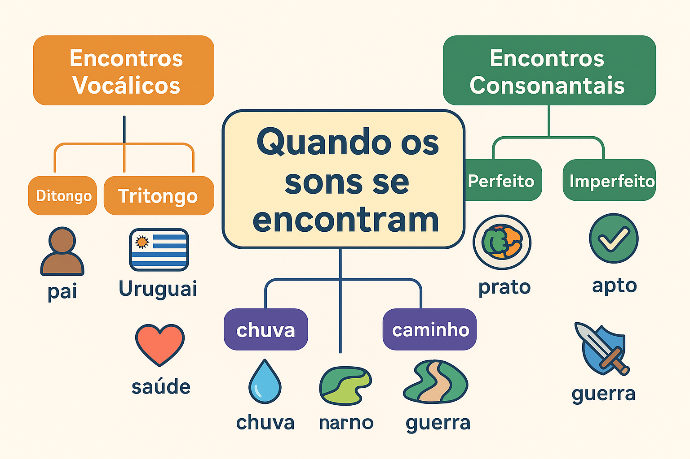

Encontros Vocálicos e Consonantais: Quando os sons se encontram na Língua Portuguesa
Na arquitetura fônica e ortográfica da Língua Portuguesa, as palavras não resultam de uma justaposição mecânica de letras, mas da combinação orgânica de segmentos vocálicos e consonantais regidos por leis fonotáticas rigorosas. Quando dois ou mais desses sons ocorrem contíguos na cadeia da fala, testemunhamos o surgimento dos encontros vocálicos e dos encontros consonantais — fenômenos que determinam a divisão silábica, a métrica poética, a prosódia, a ortografia e as regras do sistema de acentuação gráfica oficial.
Contudo, a abordagem tradicional do ensino escolar frequentemente incorre em graves equívocos ao tratar reuniões de grafemas na folha de papel como se fossem, automaticamente, encontros de sons na fala. Essa confusão entre o plano gráfico e o plano fonológico atinge seu ápice na frequente incapacidade de distinguir um encontro consonantal genuíno de um dígrafo (seja ele consonantal ou vocálico nasal), ou de reconhecer a fronteira exata entre um ditongo e um hiato.
Neste guia abrangente fundamentado na fonologia descritiva, examinaremos a taxonomia dos encontros vocálicos (ditongos crescentes e decrescentes, orais e nasais; tritongos; e hiatos), a mecânica dos encontros consonantais perfeitos e imperfeitos, o confronto analítico entre dígrafos e encontros consonantais, quadros de segmentação fonológica comparativa e um banco de questões resolvidas de concursos e vestibulares.

A dinâmica fonotática: o encontro de segmentos na cadeia da fala
A fonotaxe é o ramo da Fonologia que estuda as restrições e regras permissíveis para a combinação de fonemas em uma dada língua. No português brasileiro, a sílaba organiza-se segundo o Princípio do Perfil de Sonoridade: as consoantes de menor sonoridade ocupam a borda inicial (ataque), a vogal atua como ápice de ressonância obrigatório (núcleo), e os segmentos que decrescem em sonoridade fecham a estrutura (coda).
Quando dois segmentos vocálicos ou consonantais encontram-se em contato imediato, sua acomodação silábica depende diretamente de sua força acústica e de sua autonomia articulatória. Se ambos os sons possuem energia para sustentar núcleos independentes, separam-se em sílabas distintas; se compartilham a mesma onda acústica, fundem-se em uma única emissão de voz.
A regra de ouro da fonologia silábica
Para Joaquim Mattoso Câmara Jr. (1970), todo encontro fônico no português deve ser analisado a partir de um princípio intransponível: cada sílaba comporta estritamente uma única vogal plena. Quando duas vogais legítimas entram em contato, elas jamais podem coexistir na mesma sílaba; obrigatoriamente cindem-se em um hiato. Para que haja coabitação na mesma sílaba, um dos elementos deve necessariamente renunciar ao seu estatuto nuclear, funcionando como semivogal (glide).
1. Encontros Vocálicos: Ditongos, Tritongos e Hiatos
Os encontros vocálicos ocorrem quando sequências de sons com características vocálicas aparecem contíguas no vocábulo. Classificam-se em três modalidades estruturais:
A. Ditongo: o abraço intrassilábico
Configura-se pela fusão indivisível de uma vogal plena (núcleo proeminente) e uma semivogal (glide /j/ ou /w/) na mesma emissão silábica. Os ditongos classificam-se a partir de três critérios:
- Quanto ao percurso da sonoridade:
• Decrescente: a vogal nuclear vem primeiro, seguida da semivogal mais fraca (V + SV). Há perda de energia acústica: pai (/p-a-j/), noite (/n-o-j-tʃ-i/), meu (/m-e-w/), ouro (/o-w-ɾ-u/);
• Crescente: a semivogal introduz a emissão e expande-se na direção da vogal plena (SV + V): água (/a-g-w-a/), pátria (/p-a-t-ɾ-j-a/), espécie (/e-s-p-ɛ-s-j-i/). - Quanto à via de escape do ar:
• Oral: o fluxo de ar ressoa unicamente na boca: céu, leite, herói, grau;
• Nasal: a corrente aérea é liberada simultaneamente pela boca e pelo nariz: mãe (/m-ã-j̃/), pão (/p-ã-w̃/), põe (/p-õ-j̃/), cantam (foneticamente terminado no ditongo nasal /ãw̃/). - Quanto ao timbre vocálico:
• Aberto: vogal média pronunciada com timbre aberto (/ɛ/, /ɔ/): papéis, herói, céu;
• Fechado: vogal média pronunciada com timbre fechado (/e/, /o/): ouro, peito, outro.
B. Tritongo: a tríade silábica
Consiste na reunião indissolúvel de três segmentos na mesma sílaba, obedecendo à fórmula fixa e inflexível: Semivogal + Vogal + Semivogal (SV + V + SV). Não existe tritongo sem a vogal plena atuando no vértice intermediário:
- Tritongo oral: U-ru-guai (/g-w-a-j/), Pa-ra-guai, i-guais, quais;
- Tritongo nasal: sa-guão (/g-w-ã-w̃/), quão (/k-w-ã-w̃/), en-xá-guem (grafado -guem, foneticamente /g-w-ẽ-j̃/).
C. Hiato: o divórcio intersilábico
Dá-se quando duas vogais plenas ocorrem lado a lado na escrita, mas, por possuírem ambas estatuto nuclear autônomo, pertencem a sílabas distintas. Ao serem pronunciadas, verifica-se uma pausa ou rearticulação muscular entre elas:
- Sa-ú-de (a vogal /u/ sustenta sua própria sílaba);
- Pa-ís (opõe-se ao monossílabo pais com ditongo);
- Ba-ú, po-e-ta, mo-e-da, ru-í-na, co-or-de-nar, vo-o.
2. Encontros Consonantais: agrupamentos e fronteiras silábicas
Ocorre encontro consonantal quando há a sequência de dois ou mais fonemas consonantais consecutivos no vocábulo, sendo todos eles perceptivelmente audíveis. Classificam-se quanto à sua integridade silábica em:
Encontro Consonantal Próprio (Perfeito)
As consoantes pertencem à mesma sílaba (inseparáveis na partição ortográfica).
Formação típica: Consoante oclusiva ou fricativa (/p, b, t, d, k, g, f, v/) seguida imediatamente de líquida (/l/ ou /ɾ/).
Exemplos: pra-to, cla-ro, bra-ço, dra-ma, flor, gri-to, trem.
Encontro Consonantal Impróprio (Imperfeito)
As consoantes pertencem a sílabas contíguas distintas (separáveis na translineação).
Formação típica: Consoantes em posição de coda seguidas pela consoante de ataque da sílaba seguinte.
Exemplos: ap-to, rit-mo, ad-vo-ga-do, al-ge-ma, cor-da, ob-je-to.
Há ainda os encontros consonantais que ocorrem no início absoluto de palavras eruditas (pneu, psi-co-lo-gi-a, gno-mo, mne-mô-ni-co). Na norma-padrão da escrita, permanecem juntos na primeira sílaba; na fala coloquial brasileira espontânea, contudo, sofrem frequentemente o processo de epêntese vocálica (inserção do som [i]: [pi.new], [pi.si.ko.lo.ʒi.ɐ]).
3. Encontro Consonantal versus Dígrafo: o divisor de águas
O erro mais recorrente em análises gramaticais consiste em classificar dígrafos como se fossem encontros consonantais. A fronteira científica é categórica e inegociável:
- No Encontro Consonantal: temos 2 letras e 2 fonemas audíveis (em prato, articulam-se /p/ e /ɾ/; em apto, articulam-se /p/ e /t/);
- No Dígrafo: temos 2 letras e apenas 1 fonema (em chuva, as letras ch representam unicamente o fonema /ʃ/; em carro, rr materializa /ʁ/).
O perigo invisível: os dígrafos vocálicos (nasais)
Palavras como canto, campo, tempo, tinta e ponto não possuem encontro consonantal nas letras nt ou mp. Nesses vocábulos, as letras m e n em final de sílaba são meros sinais diacríticos que indicam a nasalização da vogal que as precede, configurando dígrafos vocálicos (/k-ã-t-u/, /k-ã-p-u/, /t-ẽ-p-u/). O único encontro consonantal existente nessas palavras só ocorre se houver outra sequência fônica de duas consoantes reais e distintas pronunciadas.
| Estrutura Analisada | Exemplo | Contagem de Letras | Transcrição Fonêmica | Contagem de Fonemas | Classificação Fonológica Precisa |
|---|---|---|---|---|---|
| praia | pra-ia | 5 letras | /p-ɾ-a-j-a/ | 5 fonemas | Encontro consonantal perfeito (pr) + Ditongo decrescente (ai) em hiato com (a) |
| chuveiro | chu-vei-ro | 8 letras | /ʃ-u-v-e-j-ɾ-u/ | 7 fonemas | Dígrafo consonantal (ch) + Ditongo decrescente oral (ei) |
| sublinhar | sub-li-nhar | 9 letras | /s-u-b-l-ĩ-ɲ-a-ʁ/ | 8 fonemas | Encontro consonantal perfeito/impróprio (bl) + Dígrafo consonantal (nh) |
| saúde | sa-ú-de | 5 letras | /s-a-u-dʒ-i/ | 5 fonemas | Hiato tônico (a-ú) sem dígrafos |
| guerra | guer-ra | 6 letras | /g-ɛ-ʁ-a/ | 4 fonemas | Dois dígrafos consonantais (gu diante de e + rr) |
| Uruguai | U-ru-guai | 7 letras | /u-ɾ-u-g-w-a-j/ | 7 fonemas | Tritongo oral (/w/ + /a/ + /j/) na última sílaba |
| canto | can-to | 5 letras | /k-ã-t-u/ | 4 fonemas | Dígrafo vocálico nasal (/ã/) — NÃO há encontro consonantal |
Análise fonológica na prática: dissecação de vocábulos complexos
Acompanhe a dissecação técnica passo a passo de termos comumente explorados em bancas examinadoras:
Caso 1: Vocábulo "Subscrito"
Estrutura silábica: Subs-cri-to (/s-u-b-s-k-ɾ-i-t-u/)
- Encontro consonantal complexo: a sequência -bsc- reúne o encontro imperfeito /b-s/ com o encontro perfeito /k-ɾ/;
- Total sonoro: 9 letras e 9 fonemas; não há dígrafos nem encontros vocálicos.
Caso 2: Vocábulo "Quente"
Estrutura silábica: Quen-te (/k-ẽ-tʃ-i/)
- Dígrafo consonantal qu: o u não é pronunciado (/k/);
- Dígrafo vocálico nasal en: a letra n não é consoante articulada, apenas nasaliza a vogal (/ẽ/);
- Resultado: 6 letras e apenas 4 fonemas. Inexistência de encontro consonantal.
Caso 3: Vocábulo "Padeiro" versus "Padeirada"
Em pa-dei-ro, o encontro ei forma ditongo decrescente oral fechado. No processo de derivação em pa-dei-ra-da, a sílaba tônica desloca-se para -ra-, transformando o ditongo em átono, porém mantendo sua estabilidade fonológica intrassilábica.
Esquema pedagógico: o algoritmo de identificação dos encontros
Roteiro Decisório para Análise Fonológica
Identifique as letras contíguas sob análise
→ São duas ou mais consoantes juntas?
• Se produzem 2 sons audíveis: Encontro Consonantal (verificar se na mesma sílaba = perfeito; em sílabas separadas = imperfeito).
• Se produzem 1 único som: Dígrafo Consonantal (ch, lh, nh, rr, ss, sc, sç, xc, gu/qu).
→ São vogais graficamente juntas?
• Ficam na mesma sílaba?
↳ 2 sons (Vogal + Semivogal): Ditongo.
↳ 3 sons (Semivogal + Vogal + Semivogal): Tritongo.
• Ficam em sílabas separadas (Vogal plena + Vogal plena)? Hiato.
Questões para estudo e fixação
Questão 1 (Distinção Conceitual / Concurso Público)
Assinale a alternativa em que o par de palavras apresenta, respectivamente, um encontro consonantal e um dígrafo consonantal:
A) Chuva / Carro.
B) Prato / Chave.
C) Canto / Pranto.
D) Nascer / Desço.
Ver resposta comentada
Resposta comentada: Alternativa B. Em prato, o grupo pr forma encontro consonantal perfeito (duas consoantes plenamente audíveis: /p/ e /ɾ/). Em chave, o grupo ch forma dígrafo consonantal (duas letras representando um único fonema: /ʃ/). Na alternativa A, ambos são dígrafos; na C, canto possui dígrafo vocálico nasal (/ã/); na D, ambos são dígrafos consonantais.
Questão 2 (Encontros Vocálicos e Separação Silábica)
Dadas as palavras: 1. Gratuito; 2. Ruim; 3. Pônei; 4. Paraguai. A correta classificação de seus encontros vocálicos é, respectivamente:
A) Ditongo decrescente, hiato, ditongo decrescente, tritongo.
B) Hiato, hiato, ditongo crescente, tritongo.
C) Ditongo crescente, ditongo decrescente, hiato, tritongo.
D) Hiato, ditongo decrescente, ditongo decrescente, hiato.
Ver resposta comentada
Resposta comentada: Alternativa A.
1. Gra-tui-to: a sílaba tônica é tui, formando ditongo decrescente (/w-i/), sendo erro de prosódia pronunciá-la como hiato;
2. Ru-im: as vogais separam-se em sílabas distintas (hiato);
3. Pô-nei: a terminação ei constitui ditongo decrescente oral;
4. Pa-ra-guai: a terminação reúne semivogal + vogal + semivogal (/w-a-j/), caracterizando tritongo oral.
Questão 3 (Pegadinha Clássica: Dígrafo Vocálico)
Quantos encontros consonantais existem no vocábulo "transplante"?
Ver resposta comentada
Resposta comentada: Apenas 2 encontros consonantais: o grupo inicial tr (/t-ɾ/) e o grupo medial pl (/p-l/). As sequências an (/ã/) em ambas as ocorrências configuram dígrafos vocálicos nasais. As letras n não representam consoantes na cadeia fônica (/t-ɾ-ã-s-p-l-ã-tʃ-i/), inexistindo qualquer encontro consonantal em -nsp- ou -nt-.
Questão 4 (Comportamento de "QU" e "GU")
Em qual das palavras a seguir o grupo gu NÃO constitui dígrafo, mas encontro com semivogal?
A) Águia.
B) Preguiça.
C) Guerra.
D) Égua.
Ver resposta comentada
Resposta comentada: Alternativa D. Na palavra égua (/ɛ-g-w-a/), a letra u é articulada com nitidez como semivogal labiovelar [w], formando ditongo crescente oral com a vogal /a/. Nas alternativas A, B e C, a letra u é muda, funcionando o conjunto gu como dígrafo consonantal representativo do fonema oclusivo velar /g/.
Questão 5 (Relação com a Acentuação Gráfica Oficial)
Por que os vocábulos "sa-í-da" e "ba-ú" recebem acento gráfico, enquanto "saiu" e "ruim" não são acentuados?
Ver resposta comentada
Resposta comentada: Pela regra especial dos hiatos da Língua Portuguesa: acentuam-se as letras i e u tônicas quando formam hiato com a vogal anterior, aparecendo sozinhas na sílaba ou acompanhadas de s, desde que não sejam seguidas por nh nem precedidas por ditongo em paroxítonas. Em sa-í-da e ba-ú, o i e o u são hiatos tônicos isolados. Já em saiu, o u forma ditongo decrescente na sílaba -iu; e em ru-im, embora haja hiato, a sílaba fecha-se com a consoante m, o que impede a acentuação.
Resumo dos encontros vocálicos e consonantais
- Ditongo: união de vogal + semivogal (ou vice-versa) na mesma sílaba (crescente/decrescente, oral/nasal);
- Tritongo: sequência obrigatória e inseparável de Semivogal + Vogal + Semivogal (ex.: Uruguai, saguão);
- Hiato: encontro de duas vogais plenas contíguas que pertencem obrigatoriamente a sílabas distintas (ex.: sa-ú-de);
- Encontro Consonantal: sucessão de duas ou mais consoantes em que todos os sons são emitidos e audíveis;
- Encontro Perfeito: consoantes na mesma sílaba (ex.: prato); Imperfeito: consoantes em sílabas separadas (ex.: apto);
- Dígrafo não é encontro consonantal: no dígrafo, duas letras representam um único som indivisível (ex.: chuva, carro, canto);
- A correta distinção desses encontros é o fundamento indispensável para o domínio das regras de acentuação gráfica oficial.
Perguntas frequentes sobre encontros sonoros
Qual é a diferença elementar entre ditongo e hiato?
O ditongo reúne uma vogal e uma semivogal na mesma sílaba, sem quebra acústica (ex.: pai). O hiato separa duas vogais plenas em sílabas distintas, exigindo uma rearticulação muscular entre elas (ex.: pa-ís).
Por que as palavras "canto" e "tempo" não possuem encontro consonantal?
Porque as letras n e m pós-vocálicas nessas palavras não funcionam como consoantes autônomas; elas atuam como sinais diacríticos de nasalização da vogal antecedente, formando dígrafos vocálicos nasais (/k-ã-t-u/, /t-ẽ-p-u/).
O que é um ditongo fonético (oculto)?
É aquele que não está marcado graficamente com as letras i ou u, mas se manifesta nitidamente na pronúncia oral. Ocorre tipicamente no final de formas verbais terminadas em -am, -em (ex.: cantam soa como ditongo /ãw̃/; falam soa como /ãw̃/; também soa como /ẽj̃/).
Como saber se "qu" e "gu" formam dígrafo ou encontro com semivogal?
Se a letra u não for pronunciada, trata-se de dígrafo consonantal (ex.: quilo = /k/, guerra = /g/). Se a letra u for articulada audivelmente, trata-se de encontro vocálico do tipo ditongo crescente (ex.: quase = /kw/, água = /gw/).
O que são encontros consonantais mistos?
São agrupamentos de três ou mais consoantes consecutivas que mesclam um encontro imperfeito e um perfeito no mesmo vocábulo, como em des-pre-zo (o s fica na sílaba anterior e o grupo pr abre a sílaba seguinte).
Como classificar o encontro da palavra "ideia"?
Na palavra ideia (i-dei-a), ocorre um ditongo decrescente oral (ei) na penúltima sílaba seguido por um hiato com a vogal final (a).
Por que o Novo Acordo Ortográfico alterou a acentuação dos ditongos abertos?
O acordo eliminou o acento gráfico nos ditongos abertos éi e ói exclusivamente nas palavras paroxítonas (como ideia, coreia, heroico, jiboia), mantendo o acento obrigatório nas palavras oxítonas e nos monossílabos tônicos (como herói, anéis, céu, dói).
Por que a pronúncia de "pneu" como [pi.neu] é considerada variação linguística?
Porque o padrão silábico canônico e preferencial do português brasileiro é consoante + vogal (CV). Encontros consonantais com consoantes oclusivas sem líquida em início de palavra são estranhos à matriz fônica popular, gerando naturalmente a inserção de uma vogal de apoio (epêntese).
Considerações finais
Dominar a identificação e a classificação dos encontros vocálicos e consonantais é a fundação sobre a qual se ergue todo o edifício da gramática normativa e da fonologia descritiva. Compreender a anatomia silábica, discriminando com exatidão o que é som audível (fonema) e o que é convenção ortográfica (letra e dígrafo), confere ao estudante a segurança indispensável para transitar com maestria pela divisão silábica, pela prosódia e pela acentuação gráfica oficial.
Ao superar a superficialidade da decodificação mecânica da escrita e enxergar a dinâmica acústica e fonotática real do idioma, o aprendiz e o pesquisador transformam o estudo da língua materna em uma prática de investigação científica e de enriquecimento metalinguístico duradouro.
Conteúdos relacionados
- Fonologia: fonemas, sílabas e estrutura sonora da Língua Portuguesa — Índice de Conteúdos
- Fonema e Letra: Uma distinção fundamental na análise linguística
- Tipos de Fonemas: Vogais, Semivogais e Consoantes
- Hiatos, Ditongos e Tritongos: como identificar e exemplos
- Classificação Fonética Detalhada das Vogais
- Fonologia das Semivogais (Glides / Semiconsoantes)
- O Som das Palavras: Sílaba, Tonicidade e Prosódia
- Fonologia e Fonética: distinções conceituais
- Processo de Elisão (ou Supressão) de Segmentos Fonológicos
Referências
- CAGLIARI, Luiz Carlos. Alfabetização e Linguística. 10. ed. São Paulo: Scipione, 2009.
- CÂMARA JR., Joaquim Mattoso. Estrutura da Língua Portuguesa. Petrópolis: Vozes, 1970.
- CÂMARA JR., Joaquim Mattoso. Problemas de Linguística Descritiva. 18. ed. Petrópolis: Vozes, 2004.
- CLEMENTS, George N. The role of the sonority cycle in core syllabification. In: KINGSTON, J.; BECKMAN, M. E. (ed.). Papers in Laboratory Phonology I. Cambridge: Cambridge University Press, 1990. p. 283-333.
- CRYSTAL, David. A Dictionary of Linguistics and Phonetics. 6. ed. Oxford: Blackwell Publishing, 2008.
- DUBOIS, Jean et al. Dicionário de Linguística. Tradução de Izidoro Blikstein. São Paulo: Cultrix, 2014.
- SILVA, Thaïs Cristófaro. Fonética e Fonologia do Português: roteiro de estudos e guia de exercícios. 10. ed. São Paulo: Contexto, 2010.
Explore outros conteúdos
Continue seus estudos acessando outras seções do site Mestre Kira: